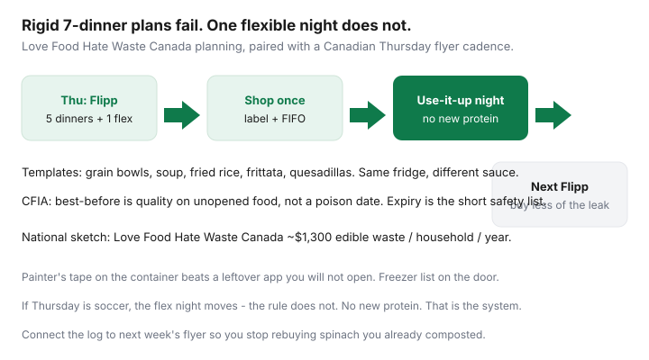

Food & Groceries · Canada
The Canadian leftover system: plan one flexible night so food actually gets eaten
Rigid seven-dinner plans fail the first time soccer runs late or someone eats a bagel at 4 p.m. Then the leftover roast becomes guilt, then compost. Love Food Hate Waste Canada keeps saying the quiet part: plan, and leave room to use what you already have. Canadian flyer culture makes that concrete — five planned dinners, one use-it-up night, then Flipp again — so the next circular does not repurchase the spinach you already threw out.
This is the leftover operating system: why seven-across-seven breaks, designating the night, transform templates, CFIA-style storage literacy, freezer labels, and feeding the log into next week’s list. Broader waste leaks (FIFO, best-before vs expiry, surplus apps) live in cut food waste. This page is the calendar rule.
Disclosure: No natural affiliate. Storage containers are an optional offer type if we later add links. Painter’s tape is enough. We do not currently claim partnerships. This is not food-safety certification.
Key takeaways
- Plan five dinners plus one flex use-it-up night. The seventh slot is leftover lunches or a planned cheap emergency meal — not a seventh unique recipe.
- Rule of leftover night: no new protein. Bowls, soup, fried rice, frittata, quesadillas.
- Best-before is quality on unopened food (CFIA). Cooked leftovers are a shorter clock. When in doubt, throw it out.
- Label fridge and freezer. Mystery containers do not get eaten.
- Whatever you composted this week is deleted from next Thursday’s Flipp list — or bought in a smaller format.
Why rigid 7-dinner plans fail
They assume a stable Thursday-to-Wednesday, two adults with identical appetites, no bakery bag, no kid practice, no “I already ate.” Canadian households are not that. When dinner seven was “fresh salmon” and Tuesday already used the salmon in a panic, you either shop again (the leak) or order in (the other leak).
Love Food Hate Waste Canada’s meal-planning pages push lists built from what you have, plus a plan to use leftovers. National sketch: about $1,300 of edible food per household per year, on the order of 4.5 meals a week, with date-label confusion a large slice of avoidable waste. Your log will be smaller or larger. The calendar rule still helps.

Designating a use-it-up night
Pick the night the fridge is loudest — often Thursday before the new flyer shop, or Wednesday if you shop Sunday. Put it on the calendar like practice. If that night is impossible this week, slide it. Do not delete it.
- Open the fridge before you open a delivery app. Photo it if other people cook.
- Pull cooked protein, cooked grain, wilting vegetables, open sauces.
- Choose a template (next section). Cook. Eat.
- If nothing is safe to eat, that is a labelling failure from Sunday — fix the system, then use the $5 emergency meal from the meal-prep guide. Do not pretend mould is a template.
Family version: leftover night is already in the family meal matrix. Single-person version: leftover night is how a $300 month survives. Couples: it is how Costco chicken becomes meals instead of smell.
Transform templates (bowls, soups, fried rice)
| Template | Needs | Use when |
|---|---|---|
| Grain bowl | Rice/oats leftover, protein, crunchy veg, yogurt or hot sauce | Bits of everything, nothing soupy |
| Soup / stew stretch | Stock cube or canned tomato, veg, protein, beans | Wilting veg, small meat scraps |
| Fried rice | Cold rice, egg or tofu, frozen veg, soy | Rice that would otherwise die |
| Frittata / scrambled | Eggs, veg, cheese heel | No grain, fridge odds |
| Quesadilla / wrap | Tortillas you froze on day one, beans, cheese, veg | Hands-down Thursday |
Vegetarian households: dal and chili are already templates. Omnivores: do not buy a new chicken for leftover night. That is a second shop dressed up as virtue.
Safe storage times for common leftovers
Practice rules for a Canadian fridge, not a lab certificate:
- Cooked meals: eat within a few days or freeze. Do not run a week on the same rice if it has been in and out of the microwave.
- Cooked rice: cool fast, fridge, reheat steaming hot. If it sat out, bin it.
- Cooked meat: same short fridge clock; freeze portions you will not eat by leftover night.
- Opened yogurt and milk: best-before is about unopened quality (CFIA). Opened product is smell, texture, and your shorter household clock.
- Raw meat: if slime or off smell, it is not a leftover template. It is a discard.
Expiry dates on the short CFIA list (infant formula and similar) are not leftover night. Do not eat those after the date.
Freezer labelling conventions
Same as batch cooking: name, cooked date, eat-by. Door list. FIFO. Transparent containers. If you cannot read the tape, you will not eat the food. Flashfood trays get a date the same night they enter the house.
Connecting leftover night to next week’s Flipp plan
After leftover night, write what you threw out that was once edible: “spinach, unused,” “rice, forgotten,” “berries, optimism.” Thursday Flipp session: do not repurchase that format, or buy less, or buy frozen. That is Love Food Hate Waste planning plus Flipp as the OS.
If leftover night keeps eating the same chili brick, you batched too much — cook smaller on Sunday. If leftover night has nothing, you under-bought protein and over-ordered takeout. Adjust the five-dinner plan, not your personality.
One flexible night is not a failed meal plan. It is the part that makes the other five dinners real.
Sources & date stamps
- Love Food Hate Waste Canada: plan-it-out / plan-your-meal pages; ~$1,300 household edible waste sketch; leftover-friendly planning.
- CFIA, “Understanding the dates on our food” (best-before vs expiry vs packaged-on), as used in our food-waste guide.
- Frugal Living Canada / similar leftover and waste explainers (directional).
- National Zero Waste Council figures cited in our food-waste article (63% avoidable; ~4.5 meals/week) as national context, not your bin.
Frequently asked questions
How do I stop throwing out leftovers?
Put a use-it-up night on the calendar, ban new protein that night, label everything, and feed what you wasted into next week’s shopping list. Guilt does not close the crisper.
Is leftover night the same as meal prep?
Meal prep cooks ahead. Leftover night empties what is already cooked or wilting. You want both: Sunday pots plus one flexible night so the pots get eaten.
Can I eat food after the best-before date?
Usually yes if it was stored properly and is unopened — CFIA says best-before is quality, not a poison date. Cooked leftovers are a different, shorter clock. Expiry-dated products on the short regulated list are not this rule.
What if leftover night has nothing safe to eat?
Use a pantry emergency meal (eggs, beans, frozen veg) and fix labelling next Sunday. Do not serve questionable meat. Do not treat a delivery app as the system — treat it as the failure mode you are reducing.
Does this work with flyers?
Yes. Plan five dinners from Thursday loss leaders, leave one night empty on purpose, shop once, then Flipp again using the waste log so you stop rebuying compost.